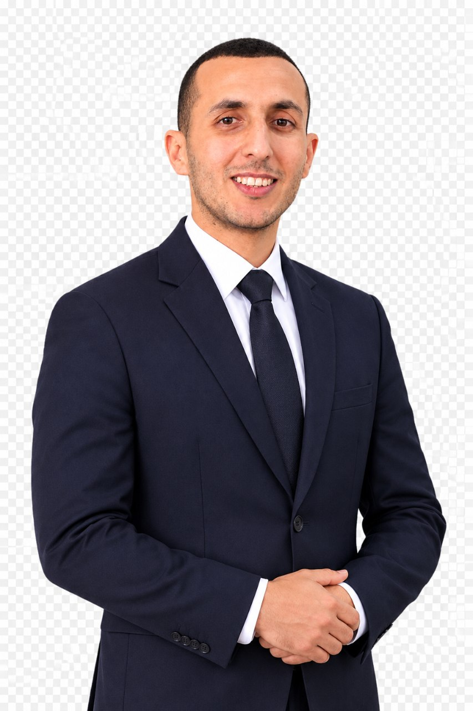

المترشح مكي حسين (رقم 03) عن حزب حركة البناء الوطني (القائمة رقم 04) لانتخابات المجلس الشعبي البلدي لبلدية غسول. نضع كفاءتنا وطاقتنا الشبابية في خدمة التنمية المحلية والنهوض بمرافق بلديتنا العزيزة.
حركة البناء الوطني • بلدية غسول
تم التأشير التوضيحي على الرقم 03 (مكي حسين) ضمن القائمة رقم 04 — اضغط على أي خانة لتجربة التأشير.
كفاءات محلية متكاملة بقيادة متصدر القائمة خروجي علي (01)، والأستاذة حساني فضيلة (02)، والأستاذ مكي حسين (03) لخدمة ساكنة غسول.
اختر ورقة حزب حركة البناء الوطني الحاملة لـ القائمة رقم 04.
ضع علامة التصويت في الخانة المقابلة لـ رقم المترشح 03 (مكي حسين).
ضع الورقة في الظرف وأودعها في الصندوق لخدمة تنمية بلدية غسول.

"أهلي وإخواني في بلدية غسول الطيبة، أترشح اليوم ضمن قائمة حزب حركة البناء الوطني حاملاً همومكم وتطلعاتكم، ومؤمناً بأن بلديتنا تزخر بطاقات شبابية ومقومات فلاحية وتنموية تستحق تسييراً حديثاً وعادلاً."
هدفنا أن نجعل من المجلس الشعبي البلدي فضاءً مفتوحاً لكل مواطن، وأن نترجم الوعود إلى مشاريع ملموسة في الأحياء والقرى والمناطق الفلاحية دون إقصاء أو تأجيل.
لقاءات دورية في كل الأحياء والمداشر لإشراك المواطن في تحديد أولويات التنمية.
تسيير نزيه للميزانية البلدية ونشر حصيلة المشاريع المنجزة بكل وضوح.
دعم المبادرات الشبانية والجمعوية وتوفير فضاءات الرياضة والثقافة والإبداع.
إنصاف كافة أحياء مركز البلدية والتجمعات الريفية والمحيطات الفلاحية.
اختر المحور للاطلاع على أبرز المشاريع والاقتراحات العملية للنهوض ببلديتنا في مختلف المجالات.
برنامجنا مفتوح لإثراءات أبناء بلدية غسول. شاركنا فكرتك أو انشغال حيك لإدراجه ضمن أولوياتنا.
صوّت على الملف الأكثر استعجالاً من وجهة نظرك، وستظهر النتائج المباشرة فوراً ويتم حفظ مشاركتك.
يشرفنا حضوركم ومشاركتكم في اللقاءات المباشرة عبر مختلف أحياء وقرى بلدية غسول.
حوار مفتوح حول التهيئة الحضرية، شبكات المياه، وتحسين الخدمات الإدارية والنظافة.
مناقشة انشغالات المسالك الفلاحية، الكهرباء الريفية، ومرافقة النشاط الفلاحي بالمنطقة.
عرض مقترحات دعم النوادي الرياضية، تهيئة الملاعب الجوارية، وتمكين الشباب.